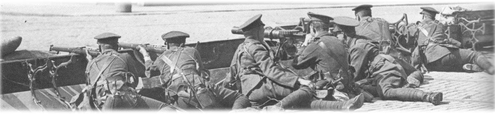

Wednesday April 26
At 8am the Helga, a British fisheries protection Vessel began shelling Liberty Hall from it's mooring opposite the Custom House. It succeeded in both reducing the building to a shell and traumitising it's only occupant, the caretaker as it had already been abandoned by the rebels. It was an obvious target as it had long been, as the Irish Times reported, "the centre of social anarchy, the brain of every riot and disturbance."
The Battle of Mount Street
To the south, newly arrived British troops assembled on the quayside in Dun Laoghaire (then known as Kingstown). A portion of these regiments was made up of young, inexperienced soldiers from the Nottingham area, known as the Sherwood Foresters, part of the 59th North Midland Division who had received orders from Brigade HQ to ‘stand to’ after the British High Command had received a request from Ireland for reinforcements to put down the armed insurrection. Many of these soldiers had only six weeks basic training and had yet to fire their rifle. The 2/7th and the 2/8th battalions were ordered to take the coast road in through Ballsbridge and on to Trinity College. It was at the Royal Dublin Showgrounds that they received word that rebel forces occupied the schoolhouse on Northumberland Road.
The actual situation was more complicated. On the morning of Easter Monday, a battalion, under the command of Eamon de Valera, occupied Boland’s Bakery, located at the corner of Macken Street (Great Clarence St. at the time) and Grand Canal Street, where the Treasury building now stands. Lieutenant Michael Malone led sixteen volunteers from ‘C’ company, 3rd battalion, to the Mount Street bridge area, taking positions in the Parochial Hall, 25 Northumberland Road, and Clanwilliam House, and barricaded themselves in using furniture and whatever else was available.
Malone, from his position in the bathroom at no. 25, could see the troops approaching the junction of the Northumberland and Haddington roads and, at midday, the Sherwood Foresters came under fire from Malone and Seamus Grace, as they were 300 yards from the bridge. Ten British lives were lost in the first volley. The order was given to drop, and the soldiers lay in the middle of the road as the two volunteers continued firing. Both a direct charge and an attempt to flank the house resulted in more casualties. Another charge, this time using hand grenades from a nearby military training school, resulted in blowing the front door while, at the same time, troops gained entry to the rear of the house via Percy Lane. Malone was shot as he came down the stairs, while Grace, who took cover behind an iron stove in the basement after this weapon had jammed, survived and escaped.
The Sherwood Foresters then moved towards the schoolhouse, closer to the bridge itself, but took fire from more volunteers in the Parochial Hall. These volunteers were arrested trying to make their escape via Percy Lane once they had run out of ammunition. The troops found the schoolhouse empty, despite the earlier report, and so focused their attention on Clanwilliam house just across the river. The volunteers stationed there opened fire as the troops moved to the bridge, and in the course of several attempts at crossing, the bodies began to pile up. A brief ceasefire took place to allow medical staff from the nearby Sir Patrick Dun’s hospital on Lower Grand Canal Street to remove the wounded to safety. The British charged again, and had to climb through broken windows for access. Again, Grenades were employed to clear the house, which resulted in the building burning to the ground. Three volunteers were killed, including section commander George Reynolds, the other remaining four escaped through the rear of the building.
Throughout the battle, the volunteer positions were supported by sniper fire from De Valera’s brigade in Boland’s Bakery, which resulted in up to twenty civilians being killed or wounded as they attempted to help wounded British troops on the bridge. Official British casualties for the battle listed four officers and two hundred and sixteen soldiers of other ranks killed or wounded during the Mount Street conflict.
Four eighteen pound field guns stationed at Trinity College had begun pounding the centre of the city, and the Helga's guns had switched their attention from Liberty Hall to the GPO. General Sir John Maxwell was dispatched from London, with orders to "take such measures as may be necessary for the prompt suppression of the insurrection". Maxwell was determined to accept nothing less than full unconditional surrender from the rebels.